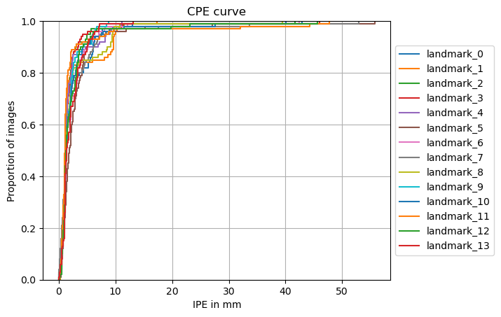

Training and Evaluating One-hot Encoded (Mask) Regression Model for Landmark Localizatioin on MML (3D)#
In this tutorial, we will train and evaluate an one-hot encoded (mask) regression model for landmark localization on MML. The Mandibular Molar Landmarking (MML) dataset, which consists of 658 annotated CT volumes of the skull. The CT volumes are transformed to a uniform scale of 512 × 512 × 256. Multiple junior and senior clinicians annotated the CT volumes. It includes 14 mandibular landmarks, specifically, 4 crowns, 8 roots of the second and third mandibular molars, and 2 cups of cuspids. Note that the number of landmarks in a single CT volume is arbitrary, i.e., some landmarks are absent in the images. We filter out all CT volumes where not all landmarks are present, reducing the dataset size to 399.
We will go through the following steps:
Setup environment#
# !python -c "import landmarker" || pip install landmarker
import sys
import os
sys.path.append("../src/")
import landmarker
Setup imports and variables#
import numpy as np
import torch
from torch.utils.data import DataLoader
from tqdm.notebook import tqdm
if torch.cuda.is_available():
device = 'cuda'
elif torch.backends.mps.is_available():
device = 'mps'
else:
device = 'cpu'
Loading the dataset#
Short description of the data and dataset module#
The landmarker package has several built-in
datasets in the landmarker.datasets module, as well as utility classes for building your own
datasets in the landmarker.data module. There are three types of datasets: ‘LandmarkDataset’,
‘HeatmapDataset’, and ‘MaskDataset’. The ‘LandmarkDataset’ is a dataset of images with landmarks,
the ‘HeatmapDataset’ is a dataset of images with heatmaps, and the ‘MaskDataset’ is a dataset of
images with masks (i.e., binary segmentation masks indiciating the location of the landmarks). The
‘HeatmapDataset’ and ‘MaskDataset’ both inherit from the ‘LandmarkDataset’ class, and thus also
contain information about the landmarks. The ‘MaskDataset’ can be constructed from specified image
and landmarks pairs, or from images and masks pairs, because often that is how the data is
distributed. The ‘HeatmapDataset’ can be constructed from images and landmarks pairs.
Images can be provided as a list of paths to stored images, or as a a numpy arary, torch tensor, list of numpy arrays or list of torch tensors. Landmarks can be as numpy arrays or torch tensors. These landmarks can be provided in three different shapes: (1) (N, D) where N is the number of samples and D is the number of dimensions, (2) (N, C, D) where C is the number of landmark classes, (3) (N, C, I, D) where I is the number of instances per landmark class, if less than I instances are provided, the remaining instances are filled with NaNs.
from monai.transforms import (Compose, ScaleIntensityd)
fn_keys = ('image', 'mask')
spatial_transformd = []
train_transformd = Compose([
ScaleIntensityd(('image', )), # Scale intensity
] + spatial_transformd)
inference_transformd = Compose([
ScaleIntensityd(('image', )),
])
from glob import glob
path_data = "..."
# Warning ensure that lists of paths for volumes, landmarks, and pixel_spacings
# volume paths
volume_paths_train = sorted(glob(f"{path_data}/train/*_volume.npy"))
volume_paths_val = sorted(glob(f"{path_data}/val/*_volume.npy"))
volume_paths_test = sorted(glob(f"{path_data}/test/*_volume.npy"))
# landmark paths and transform to single numpy arrays for each set
landmarks_paths_train = sorted(glob(f"{path_data}/train/*_label.npy"))
landmarks_train = np.stack([np.load(path) for path in landmarks_paths_train])
landmarks_paths_val = sorted(glob(f"{path_data}/val/*_label.npy"))
landmarks_val = np.stack([np.load(path) for path in landmarks_paths_val])
landmarks_paths_test = sorted(glob(f"{path_data}/test/*_label.npy"))
landmarks_test = np.stack([np.load(path) for path in landmarks_paths_test])
# voxel spacing paths and transform to single numpy arrays for each set
spacing_paths_train = sorted(glob(f"{path_data}/train/*_spacing.npy"))
pixel_spacings_train = np.stack([np.load(path) for path in spacing_paths_train])
spacing_paths_val = sorted(glob(f"{path_data}/val/*_spacing.npy"))
pixel_spacings_val = np.stack([np.load(path) for path in spacing_paths_val])
spacing_paths_test = sorted(glob(f"{path_data}/test/*_spacing.npy"))
pixel_spacings_test = np.stack([np.load(path) for path in spacing_paths_test])
dim_img = (128, 128, 64)
from landmarker.data import MaskDataset
ds_train = MaskDataset(
imgs=volume_paths_train,
landmarks=landmarks_train,
spatial_dims=3,
pixel_spacing=pixel_spacings_train,
transform=train_transformd,
store_imgs=False,
dim_img=dim_img
)
ds_val = MaskDataset(
imgs=volume_paths_val,
landmarks=landmarks_val,
spatial_dims=3,
pixel_spacing=pixel_spacings_val,
transform=inference_transformd,
store_imgs=False,
dim_img=dim_img
)
ds_test = MaskDataset(
imgs=volume_paths_test,
landmarks=landmarks_test,
spatial_dims=3,
pixel_spacing=pixel_spacings_test,
transform=inference_transformd,
store_imgs=False,
dim_img=dim_img
)
Inspecting the dataset#
batch = ds_train[0]
# %pip install 'napari[all]'
# %pip install 'ipyvolume'
Visualize 3D Image + Landmarks#
import napari
import numpy as np
viewer = napari.Viewer(ndisplay=3)
viewer.add_image(batch["image"][0])
# Add landmarks (as points layer)
viewer.add_points(
batch["landmark"],
size=5,
face_color="red",
name="landmarks"
)
napari.run()
import ipyvolume as ipv
import numpy as np
# Show volume
ipv.quickvolshow(batch["image"][0], level=[0.3, 0.6], opacity=0.03)
# Extract xyz coords
z, y, x = batch["landmark"].T
# Plot landmarks
ipv.scatter(x, y, z, color="red", size=5, marker="sphere")
ipv.show()
/opt/anaconda3/envs/vision/lib/python3.10/site-packages/ipyvolume/serialize.py:102: RuntimeWarning: invalid value encountered in cast
subdata[..., i] = ((gradient[i][zindex] / 2.0 + 0.5) * 255).astype(np.uint8)
Visualize 3D Image + Masks + Landmarks#
import napari
# Launch viewer
viewer = napari.Viewer(ndisplay=3)
# Add base volume
viewer.add_image(batch["image"][0], name="volume")
# Add landmarks (as points layer)
viewer.add_points(
batch["landmark"],
size=2,
face_color="blue",
name="landmarks"
)
# Add each channel as a label layer (colored mask)
for c in range(14):
viewer.add_labels(batch["mask"][c].int(), name=f"landmark_{c}")
napari.run()
Training and initializing the Unet model#
Initializing the model, optimizer and loss function#
from monai.networks.nets import FlexibleUNet
from landmarker.losses import NLLLoss
from landmarker.models.utils import SoftmaxND
model = FlexibleUNet(
in_channels=1,
out_channels=14, # nb of landmarks
backbone="efficientnet-b0",
pretrained=True,
decoder_channels=[128, 128, 128, 128, 128],
spatial_dims=3,
norm="batch",
act="relu",
dropout=0.5,
decoder_bias=False,
upsample="nontrainable",
pre_conv="default",
interp_mode="nearest",
is_pad=True,
).to(device)
print("Number of learnable parameters: {}".format(
sum(p.numel() for p in model.parameters() if p.requires_grad)))
lr = 1e-5
batch_size = 1
epochs = 60
optimizer = torch.optim.Adam(
[
{"params": model.parameters()},
],
lr=lr,
)
criterion = NLLLoss(spatial_dims=3)
decoder_method = "argmax"
lr_scheduler = torch.optim.lr_scheduler.ReduceLROnPlateau(optimizer, mode='min', factor=0.5,
patience=10, cooldown=10)
Number of learnable parameters: 10630738
Setting the data loaders#
train_loader = DataLoader(ds_train, batch_size=batch_size, shuffle=True, num_workers=4)
val_loader = DataLoader(ds_val, batch_size=batch_size, shuffle=False, num_workers=4)
test_loader = DataLoader(ds_test, batch_size=batch_size, shuffle=False, num_workers=4)
Training the model#
from landmarker.heatmap.decoder import heatmap_to_coord
from landmarker.metrics import point_error
def train_epoch(model, train_loader, criterion, optimizer, device):
running_loss = 0
model.train()
for i, batch in enumerate(tqdm(train_loader)):
images = batch["image"].to(device)
masks = batch["mask"].to(device)
optimizer.zero_grad()
outputs = model(images)
loss = criterion(outputs, masks)
loss.backward()
torch.nn.utils.clip_grad_norm_(model.parameters(), 10000.0)
optimizer.step()
running_loss += loss.item()
return running_loss / len(train_loader)
def val_epoch(model, val_loader, criterion, device, method="argmax"):
eval_loss = 0
eval_mpe = 0
model.eval()
with torch.no_grad():
for i, batch in enumerate(tqdm(val_loader)):
images = batch["image"].to(device)
outputs = model(images)
dim_orig = batch["dim_original"].to(device)
pixel_spacing = batch["spacing"].to(device)
padding = batch["padding"].to(device)
masks = batch["mask"].to(device)
landmarks = batch["landmark"].to(device)
loss = criterion(outputs, masks)
pred_landmarks = heatmap_to_coord(outputs, method=method, spatial_dims=3)
eval_loss += loss.item()
eval_mpe += point_error(landmarks, pred_landmarks, images.shape[-3:], dim_orig,
pixel_spacing, padding, reduction="mean")
return eval_loss / len(val_loader), eval_mpe / len(val_loader)
def train(model, train_loader, val_loader, criterion, optimizer, device, epochs=1000):
for epoch in tqdm(range(epochs)):
train_loss = train_epoch(model, train_loader, criterion, optimizer, device)
val_loss, val_mpe = val_epoch(model, val_loader, criterion, device)
print(f"Epoch {epoch+1}/{epochs} - Train loss: {train_loss:.4f} - Val loss: {val_loss:.4f} - Val mpe: {val_mpe:.4f}")
lr_scheduler.step(val_loss)
train(model, train_loader, val_loader, criterion, optimizer, device,
epochs=epochs)
Epoch 1/60 - Train loss: 13.6618 - Val loss: 13.8672 - Val mpe: 61.5504
Epoch 2/60 - Train loss: 13.0834 - Val loss: 13.8411 - Val mpe: 65.8023
Epoch 3/60 - Train loss: 12.6250 - Val loss: 13.2749 - Val mpe: 31.9457
Epoch 4/60 - Train loss: 12.0499 - Val loss: 11.4506 - Val mpe: 25.9390
Epoch 5/60 - Train loss: 11.1521 - Val loss: 9.7715 - Val mpe: 20.8436
Epoch 6/60 - Train loss: 10.0226 - Val loss: 8.4791 - Val mpe: 13.2843
Epoch 7/60 - Train loss: 9.1855 - Val loss: 7.8617 - Val mpe: 11.9547
Epoch 8/60 - Train loss: 8.7283 - Val loss: 7.6428 - Val mpe: 11.1689
Epoch 9/60 - Train loss: 8.4043 - Val loss: 7.2731 - Val mpe: 9.5265
Epoch 10/60 - Train loss: 8.2231 - Val loss: 7.1468 - Val mpe: 8.4783
Epoch 11/60 - Train loss: 7.9650 - Val loss: 6.9264 - Val mpe: 6.8929
Epoch 12/60 - Train loss: 7.7510 - Val loss: 6.7333 - Val mpe: 6.3739
Epoch 13/60 - Train loss: 7.5878 - Val loss: 6.5279 - Val mpe: 4.9365
Epoch 14/60 - Train loss: 7.4038 - Val loss: 6.3934 - Val mpe: 4.3503
Epoch 15/60 - Train loss: 7.2421 - Val loss: 6.3310 - Val mpe: 4.1600
Epoch 16/60 - Train loss: 7.1283 - Val loss: 6.2296 - Val mpe: 3.7022
Epoch 17/60 - Train loss: 6.9824 - Val loss: 6.0946 - Val mpe: 3.4488
Epoch 18/60 - Train loss: 6.9375 - Val loss: 6.0371 - Val mpe: 3.1495
Epoch 19/60 - Train loss: 6.7439 - Val loss: 5.9845 - Val mpe: 3.0110
Epoch 20/60 - Train loss: 6.6657 - Val loss: 5.9516 - Val mpe: 2.9364
Epoch 21/60 - Train loss: 6.5495 - Val loss: 5.8250 - Val mpe: 2.7313
Epoch 22/60 - Train loss: 6.4666 - Val loss: 5.8044 - Val mpe: 2.7353
Epoch 23/60 - Train loss: 6.3349 - Val loss: 5.7169 - Val mpe: 2.6575
Epoch 24/60 - Train loss: 6.3021 - Val loss: 5.6797 - Val mpe: 2.6324
Epoch 25/60 - Train loss: 6.2152 - Val loss: 5.6592 - Val mpe: 2.6078
Epoch 26/60 - Train loss: 6.1469 - Val loss: 5.6394 - Val mpe: 2.7124
Epoch 27/60 - Train loss: 6.0800 - Val loss: 5.5844 - Val mpe: 2.5731
Epoch 28/60 - Train loss: 6.0143 - Val loss: 5.5765 - Val mpe: 2.5272
Epoch 29/60 - Train loss: 5.9978 - Val loss: 5.5436 - Val mpe: 2.4605
Epoch 30/60 - Train loss: 5.9355 - Val loss: 5.5833 - Val mpe: 2.5290
Epoch 31/60 - Train loss: 5.8256 - Val loss: 5.4766 - Val mpe: 2.3692
Epoch 32/60 - Train loss: 5.8370 - Val loss: 5.4891 - Val mpe: 2.4370
Epoch 33/60 - Train loss: 5.7940 - Val loss: 5.4510 - Val mpe: 2.3741
Epoch 34/60 - Train loss: 5.6998 - Val loss: 5.4596 - Val mpe: 2.4630
Epoch 35/60 - Train loss: 5.6500 - Val loss: 5.4451 - Val mpe: 2.4061
Epoch 36/60 - Train loss: 5.5799 - Val loss: 5.4039 - Val mpe: 2.2553
Epoch 37/60 - Train loss: 5.5267 - Val loss: 5.3885 - Val mpe: 2.2276
Epoch 38/60 - Train loss: 5.4954 - Val loss: 5.3974 - Val mpe: 2.4512
Epoch 39/60 - Train loss: 5.4204 - Val loss: 5.3822 - Val mpe: 2.4493
Epoch 40/60 - Train loss: 5.4198 - Val loss: 5.4089 - Val mpe: 2.3253
Epoch 41/60 - Train loss: 5.3810 - Val loss: 5.3777 - Val mpe: 2.3584
Epoch 42/60 - Train loss: 5.3267 - Val loss: 5.3954 - Val mpe: 2.3004
Epoch 43/60 - Train loss: 5.2859 - Val loss: 5.3714 - Val mpe: 2.2624
Epoch 44/60 - Train loss: 5.2517 - Val loss: 5.3506 - Val mpe: 2.3085
Epoch 45/60 - Train loss: 5.2162 - Val loss: 5.3774 - Val mpe: 2.4262
Epoch 46/60 - Train loss: 5.1680 - Val loss: 5.3671 - Val mpe: 2.3427
Epoch 47/60 - Train loss: 5.1511 - Val loss: 5.3600 - Val mpe: 2.2358
Epoch 48/60 - Train loss: 5.0686 - Val loss: 5.3624 - Val mpe: 2.1927
Epoch 49/60 - Train loss: 5.0631 - Val loss: 5.4156 - Val mpe: 2.3349
Epoch 50/60 - Train loss: 5.0215 - Val loss: 5.3805 - Val mpe: 2.2567
Epoch 51/60 - Train loss: 4.9756 - Val loss: 5.3894 - Val mpe: 2.2176
Epoch 52/60 - Train loss: 4.9549 - Val loss: 5.3873 - Val mpe: 2.1362
Epoch 53/60 - Train loss: 4.8994 - Val loss: 5.3969 - Val mpe: 2.2065
Epoch 54/60 - Train loss: 4.8777 - Val loss: 5.4026 - Val mpe: 2.0645
Epoch 55/60 - Train loss: 4.8202 - Val loss: 5.4019 - Val mpe: 2.1457
Epoch 56/60 - Train loss: 4.7835 - Val loss: 5.4449 - Val mpe: 2.1925
Epoch 57/60 - Train loss: 4.7842 - Val loss: 5.4435 - Val mpe: 2.1724
Epoch 58/60 - Train loss: 4.7428 - Val loss: 5.4447 - Val mpe: 2.1622
Epoch 59/60 - Train loss: 4.7937 - Val loss: 5.4324 - Val mpe: 2.1657
Epoch 60/60 - Train loss: 4.7140 - Val loss: 5.4536 - Val mpe: 2.1793
# torch.save(model.state_dict(), "3D-mml-one-hot-unet.pt")
Evaluating the model#
# model.load_state_dict(torch.load("3D-mml-one-hot-unet.pt", weights_only=True))
pred_landmarks_test = []
true_landmarks_test = []
dim_origs_test = []
pixel_spacings_test = []
paddings_test = []
test_mpe = 0
model.eval()
model.to(device)
with torch.no_grad():
for i, batch in enumerate(tqdm(test_loader)):
images = batch["image"].to(device)
outputs = model(images)
dim_orig = batch["dim_original"].to(device)
pixel_spacing = batch["spacing"].to(device)
padding = batch["padding"].to(device)
landmarks = batch["landmark"].to(device)
pred_landmark = heatmap_to_coord(outputs, method="argmax", spatial_dims=3)
test_mpe += point_error(landmarks, pred_landmark, images.shape[-3:], dim_orig,
pixel_spacing, padding, reduction="mean")
pred_landmarks_test.append(pred_landmark.cpu())
true_landmarks_test.append(landmarks.cpu())
dim_origs_test.append(dim_orig.cpu())
pixel_spacings_test.append(pixel_spacing.cpu())
paddings_test.append(padding.cpu())
pred_landmarks_test = torch.cat(pred_landmarks_test)
true_landmarks_test = torch.cat(true_landmarks_test)
dim_origs_test = torch.cat(dim_origs_test)
pixel_spacings_test = torch.cat(pixel_spacings_test)
paddings_test = torch.cat(paddings_test)
test_mpe /= len(test_loader)
print(f"Test Mean PE: {test_mpe:.4f}")
Test Mean PE: 2.5072
from landmarker.metrics import sdr
sdr_test = sdr([2.0, 2.5, 3.0, 4.0], true_landmarks=true_landmarks_test, pred_landmarks=pred_landmarks_test,
dim=dim_img, dim_orig=dim_origs_test.int(), pixel_spacing=pixel_spacings_test, padding=paddings_test)
print("Results on Test Set:")
for key in sdr_test:
print(f"SDR for {key}mm: {sdr_test[key]:.4f}")
Results on Test Set:
SDR for 2.0mm: 68.2143
SDR for 2.5mm: 78.3571
SDR for 3.0mm: 81.2143
SDR for 4.0mm: 86.2143
from landmarker.visualize import detection_report
print("Test Set")
detection_report(true_landmarks_test, pred_landmarks_test, dim=dim_img, dim_orig=dim_origs_test.int(),
pixel_spacing=pixel_spacings_test, padding=paddings_test, class_names=ds_test.class_names,
radius=[2.0, 2.5, 3.0, 4.0], digits=2)
Test Set
Detection report:
1# Point-to-point error (PE) statistics:
======================================================================
Class Mean Median Std Min Max
----------------------------------------------------------------------
landmark_0 2.62 1.32 4.43 0.00 40.08
landmark_1 2.50 1.14 3.40 0.01 17.28
landmark_2 2.09 1.17 4.34 0.25 41.70
landmark_3 2.16 1.21 4.72 0.01 46.03
landmark_4 2.06 1.22 2.45 0.15 11.16
landmark_5 3.28 1.91 6.24 0.15 55.77
landmark_6 2.57 1.39 4.47 0.00 42.38
landmark_7 2.94 1.19 6.45 0.00 52.89
landmark_8 2.74 1.21 4.60 0.05 39.47
landmark_9 1.95 1.31 1.73 0.09 8.73
landmark_10 2.62 1.38 5.15 0.05 42.96
landmark_11 2.66 1.10 7.09 0.23 47.77
landmark_12 2.68 1.31 5.31 0.19 45.69
landmark_13 2.25 1.42 2.01 0.03 13.16
======================================================================
2# Success detection rate (SDR):
================================================================================
Class SDR (PE≤2.0mm) SDR (PE≤2.5mm) SDR (PE≤3.0mm) SDR (PE≤4.0mm)
--------------------------------------------------------------------------------
landmark_0 65.13 77.91 79.13 80.38
landmark_1 78.39 82.12 83.00 84.01
landmark_2 76.40 85.50 89.31 91.28
landmark_3 74.02 86.87 89.51 92.82
landmark_4 77.34 84.94 87.12 87.28
landmark_5 53.64 63.19 68.00 80.04
landmark_6 61.49 72.34 74.44 86.36
landmark_7 67.75 76.80 79.34 80.37
landmark_8 70.28 80.27 82.37 84.38
landmark_9 68.59 79.81 83.56 88.19
landmark_10 65.19 77.13 81.28 88.10
landmark_11 83.22 89.28 90.38 91.14
landmark_12 64.56 72.93 78.04 90.06
landmark_13 59.88 68.62 72.44 85.22
================================================================================
from landmarker.visualize import plot_cpe
plot_cpe(true_landmarks_test, pred_landmarks_test, dim=dim_img, dim_orig=dim_origs_test.int(),
pixel_spacing=pixel_spacings_test, padding=paddings_test, class_names=ds_test.class_names,
group=False, title="CPE curve", save_path=None,
stat='proportion', unit='mm', kind='ecdf')
